Concurrency
Досега
- Програми с мощността на ламбда смятането/машината на Тюринг
- Нямат връзка с околния свят
- вход => предвидима трансформация => изход
- Трансформиращи програми
- Добре изучени, “лесни”
IO
import Console._
val program = for
_ <- putStrLn("What is your name?")
name <- getStrLn
_ <- putStrLn("Hello, " + name + ", welcome!")
yield ()
program.unsafeRun()- Връзка с външния свят
- Но синхронна – програмата не прави нищо друго докато чака
- Интерактивни програми
Реалният свят
- Светът навън е силно паралелен и конкурентен
- Нещо повече, участниците в него си взаимодействат и реагират едни на други
- Развива се във времето
- Реактивни програми
- “Трудни”, но и най-интересни :)
- Как да ги моделираме?
Конкурентност и паралелизъм
- parallel
- from παρά + ἄλληλος, along each other
- concurrent
- present active participle of concurrō (“happen at the same time with”), from con- (“with”) + currō (“run”)
- concurrent computing
- a form of computing in which several computations are executed during overlapping time periods—concurrently—instead of sequentially
Конкурентност и паралелизъм
- конкурентност – когато няколко задачи имат
възможност да прогресират в рамките на един и същи период от време, но
не задължително едновременно
- пример: multitasking позволява различни нишки, споделящи си едно процесорно ядро, да прогресират заедно, редувайки се коя ще използва ядрото
- паралелизъм – когато конкурентни задачи биват
изпълнявани едновременно (по едно и също време)
- пример: наличието на няколко ядра би ни позволило няколко нишки да прогресират едновременно
Конкурентност и паралелизъм
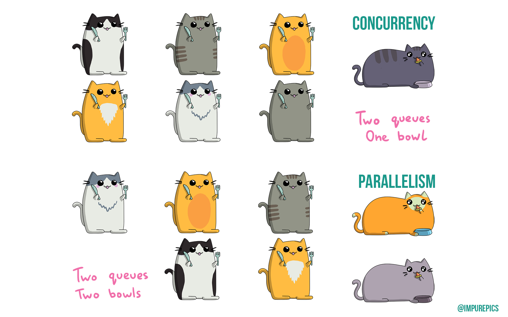
Конкурентност
В изчислителен контекст:
- конкурентността се отнася към структурата на програмата,
- паралелизмът – към хардуера и как тя ще бъде изпълнявана.
Конкурентните програми са композитност от unit-и от изчисления, които, веднъж дефинирани, могат да бъдат изпълнени независимо едно от друго.
Дистрибутирани системи
Независими компоненти със собствени изчислителни ресурси и памет, които комуникират помежду си чрез съобщения и изграждат цялостна система
(обичайно) работят конкурентно и паралелно един спрямо друг
“A distributed system is one in which the failure of a computer you didn’t even know existed can render your own computer unusable.”
Реактивност
Свойството на програмите/компонентите да реагират
на света около
тях (с което да са част от него)
Конкурентни модели
- От ниско ниво
- Нишки
- I/O и TCP/IP конкурентност
- Абстракции
- Callbacks & event loop
- Future/Promise & IO
- Актьорски модел
- Communicating Sequential Processes
- Stream/dataflow конкурентност
- …нещо друго?
Какво би направило един модел подходящ?
- Ease to reason about it
- Expressive
- Safe
- Doesn’t hide possibility for errors (e.g. in a distributed setting)
- Composable
- Functional programming to the rescue
Нишки
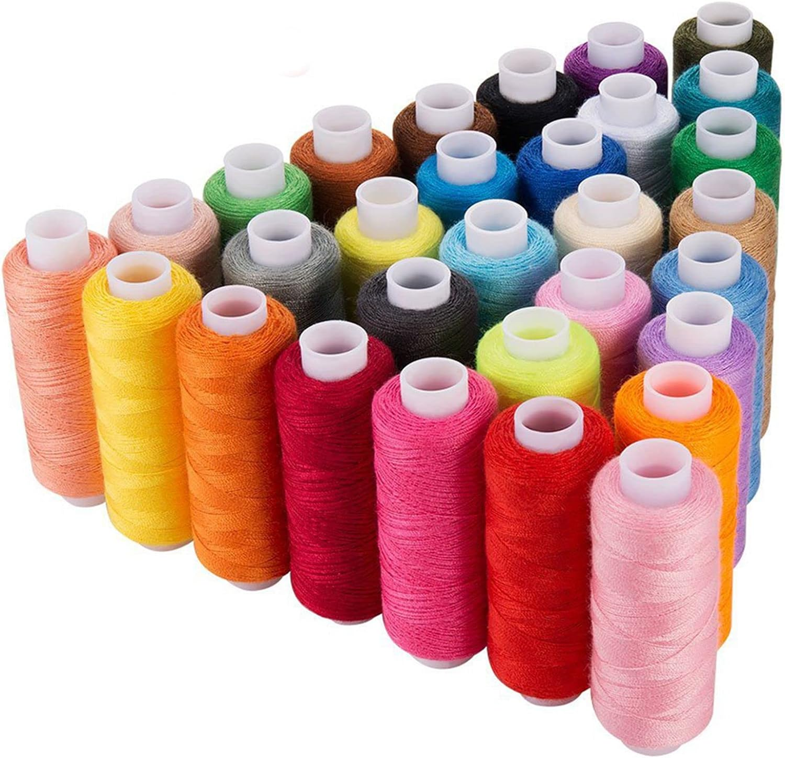
Кой е ползвал НИШКИ?
Time slicing
Нишките се управляват от OS scheduler:
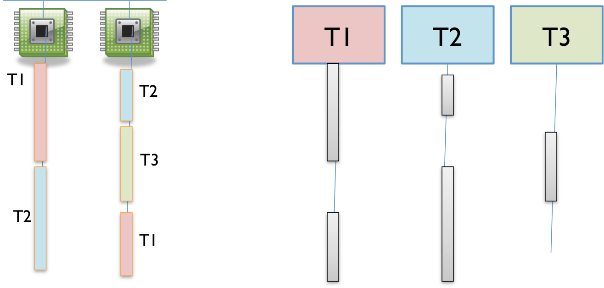
Lifecycle
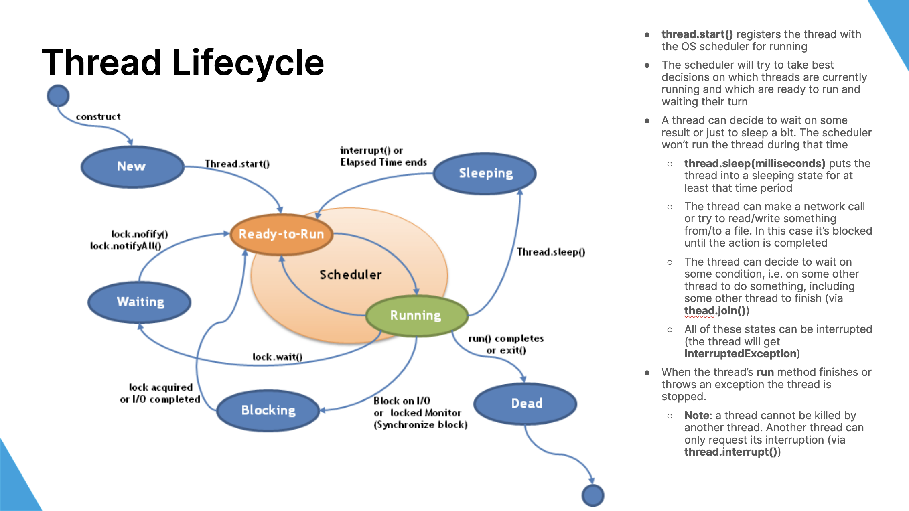
Как си комуникират нишките?
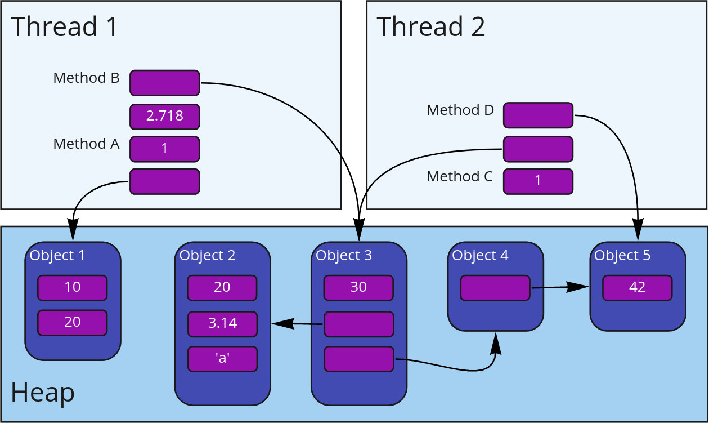
…чрез споделено състояние!
За да бъде смислен, всеки конкурентен примитив е нужно да има поне една интеракция с околния свят или с други примитиви
Границите с дистрибутираните системи се размиват
Нишки – чрез споделена памет и средства на процесора и ОС
Модел на синхронизация:
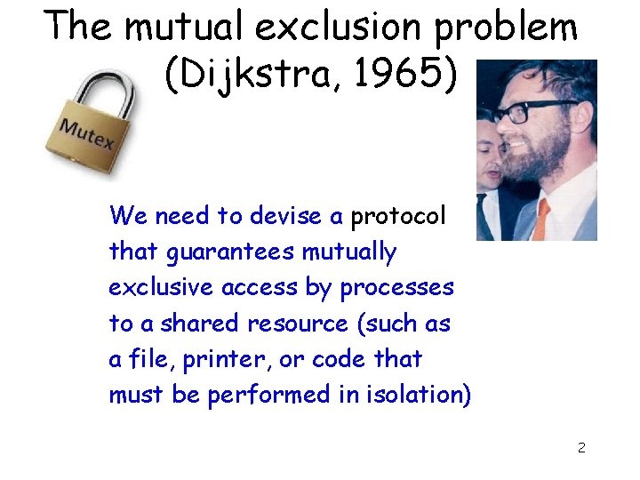
Проблеми със споделеното състояние
- Видимост
- ако нишка A промени стойност, тя ще бъде ли видяна от нишка B?
- Race condition
- когато стигнем до невалидно или неконсистентно състояние
- най-често ако една нишка презапише резултатът от действията на друга
Видимост между нишки

Видимост чрез volatile
Видимост между нишки –
happens-before релация
- Една нишка A вижда промените от друга B само ако те са се случили преди определено действие на A
- Релацията се случва преди се
определя много строго по следната дефиниция:
- Запис във
volatileпроменлива се случва преди последващо нейно прочитане (от същата или друга нишка) - За всеки два последователни statement-а в една нишка, първият се случва преди вторият
- Релацията е транзитивно затворена
- Запис във
- Образува се частична наредба между нишките
Видимост между нишки –
happens-before релация
- Всички други средства за конкурентност на Java също използват volatile семантиката
- Следователно дефиницията от предния слайд важи и за тях
Видимост между нишки
- Допълнително JVM ни гарантира:
- всяка референция към immutable обект сочи към обект с напълно валидно състояние
- неизменимостта премахва огромен клас от възможни грешки
Проблеми на нишките
- Стартират бавно
- Тежки
- всяка има стек, регистри
- превключването между нишки е бавно и минава през ядрото на ОС
- Липсва реактивност
- Комплексни
- комуникират чрез споделено състояние
- изискват синхронизация
- нишките са няколко императивни програми, изпълняващи се конкурентно
- всяка със собствена времева линия, но недетерминистично преплетени на моменти
- Не се композират
- The Problem with Threads
Как да решим проблемите?
Бавно стартиране – Thread pools
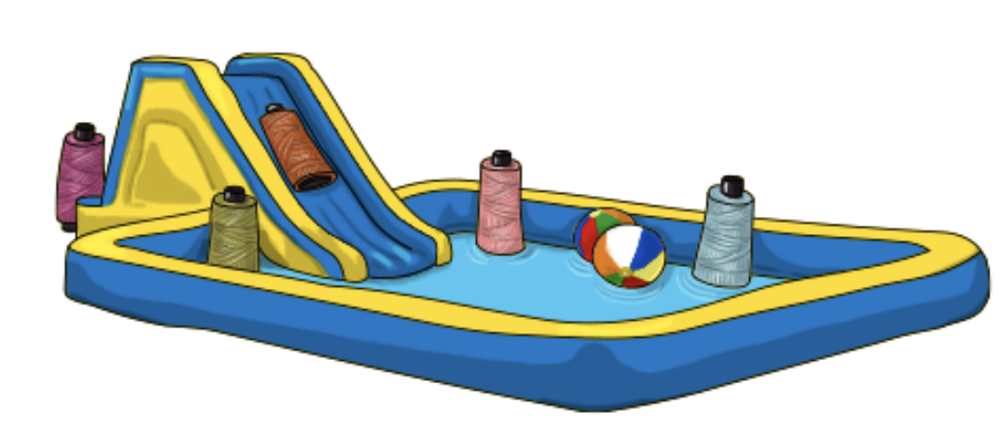
- вместо да стартираме и спираме нишки, ще опитаме да ги преизползваме
- ще разделим работата на задачи – можем да
използваме
Runnableинтерфейса за тях - задачите се изпращат към pool от нишки, готови да ги изпълнят, като ако няма свободна – изчакват
- всяка задача може да добави нови задачи по време на своето изпълнение
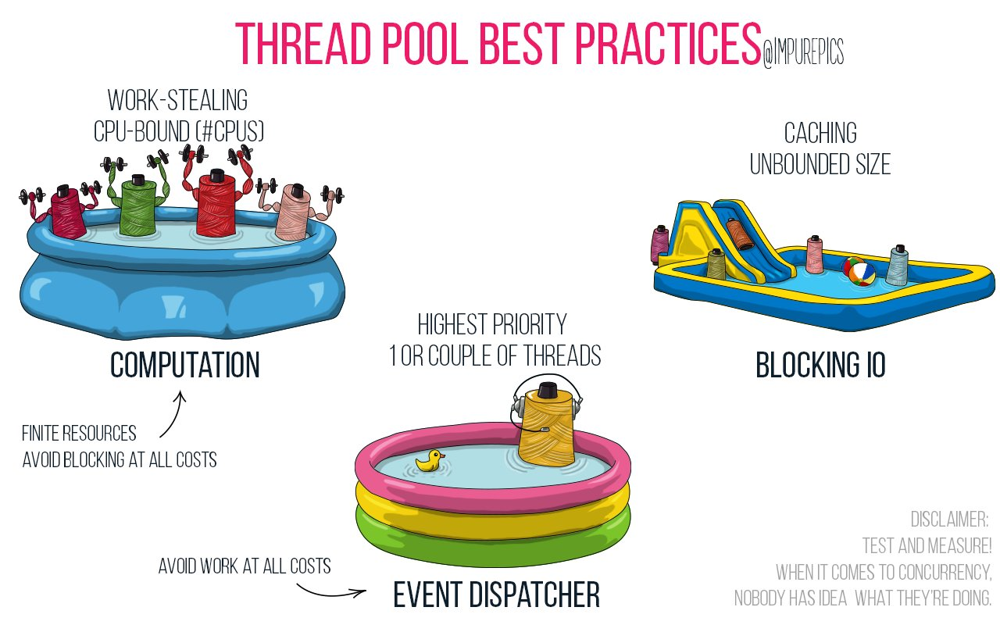
Ще ги разгледаме по-подробно по-късно
Реактивност – Callbacks
- Задействат се при завършване на работа или при определено събитие (естествени за event loop)
- Асинхронни и реактивни
- Ще ги изпълним върху pool от нишки (брой = ~брой ядра)
Callback hell

Callbacks – негативи
- Императивни, работят с mutable state
- Некомпозитни. Callback hell
- Ако се изпълняват в различни нишки, изискват синхронизация
- Ръчно спряване с грешки
Конкурентен IO
Какво бяхме постигнали с IO?
- Страничен ефект => функционален ефект
- Защо това ни харесва?
- Функционално композиране на ефекти
- Странични ефекти само при изпълнение
Как би изглеждал конкурентен IO?
Защо точно тези операции?
При императивното всяка нишка описва собствена времева линия, преплитаща се с другите
Функционално програмиране

Изрази
Ефектни изрази
Ефектни изрази
Имплементация
Реактивност на IO
Примери
Immutability
IO е безопасен, само ако стойностите в него са immutable!
Ако не са, то тяхното състояние може да е неизвестно
Какви thread pools да ползваме? CPU-bound vs IO-bound
CPU-bounded задачи
- Препоръка: thread pool с размер броя ядра
- Повече няма да подобрят производителността
- Приложния код и леки трансформации също могат да вървят в този thread pool
- Често имплементират work-stealing алгоритми (напр. Fork Join Pool)
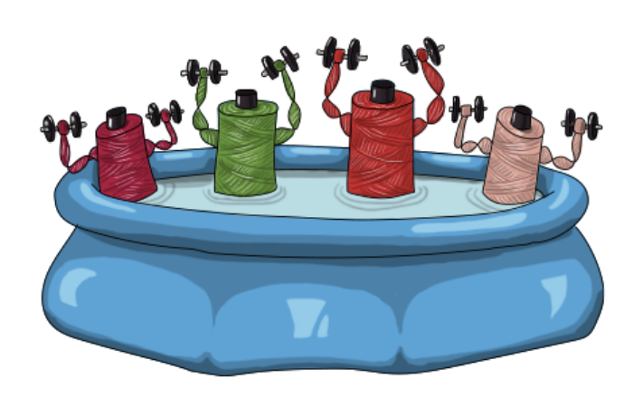
IO-bounded задачи
- При синхронен вход/изход всяка операции блокира нишката
- Тя не прави нищо през това време
- Ако искаме да постигнем добро ниво на конкурентност са ни нужни повечко нишки
- CachedThreadPool позволява добавяне на нишки при нужда
Event-dispatcher IO
- Една нишка се справя с множество IO операции
- асинхронен вход/изход
- Имплементира се event loop
- Още се нарича reactor pattern
- Използва се една или малко на брой нишки
- Препоръчва се в съвременни приложения с много клиенти
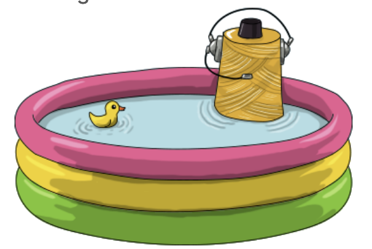
Асинхронен вход/изход чрез IO
Как работи HTTP?
Какво направихме предния път?
IO, със следната функционалност:
- Delayed
- поддържа пускане на изчисление асинхронно (в CPU-bounded thread pool)
- Блокиращ Delayed
- позволява да изпълним синхронен блокиращ вход/изход в отделен thread pool (IO-bounded)
- Concurrent
- може да изпълни две IO-та конкурентно едно от друго и да изчака резултата им
- Async
- може да адаптира callback-базиран API, включително такива за неблокиращ вход/изход
IO със Cats Effect
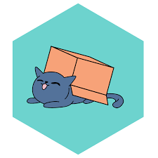
Cats Effect IO разлики
| Нашето IO | Cats Effect IO |
| IO.apply, IO.blocking | IO.apply, IO.blocking |
| IO.of, IO.error | IO.pure, IO.raiseError |
| IO.println, IO.readln | IO.println, IO.readline |
| IO.async | IO.async_, IO.async |
| map, flatMap, >>=, >> | map, flatMap, >>=, >> |
| flatMapError | handleErrorWith |
| zip, zipMap | parProduct, – |
| – | parTupled, parMapN |
Някои от тези изискват import cats.syntax.all.*
Използване на Cats Effect IO (демо)
Web библиотека (демо)
Полезни функции
parSequencerecoverrecoverWithorElseIO.race
Неопределен брой независими изчисления
Recover
Recover with друга, по-стабилна алтернатива
Fallback
Състезание
Cancellation
Future и Promise
- Част от стандартната библиотека на Scala
- Стартират изпълнение веднага щом бъдат дефинирани
(а не при unsafeRun)
- това води до някои проблеми
- Подобни на CompletableFuture в Java и Promise в
JavaScript
- те имат същите проблеми
Future и Promise API
| Future | Cats Effect IO |
| Future.apply | IO.apply, IO.blocking |
| Future.successful, Future.failed | IO.pure, IO.raiseError |
| – | IO.println, IO.readline |
| Promise, promise.complete | IO.async_, IO.async |
| map, flatMap | map, flatMap, >>=, >> |
| transform, recoverWith, .. . | handleErrorWith и други |
| zip | parProduct, – |
| zip, zipWith | parTupled, parMapN |
| Future.sequence | sequence |
| fallback | orElse |
Референтна прозрачност
> 52Референтна прозрачност
> Exception in thread "main" java.util.concurrent.TimeoutException: Futures timed out after [5 seconds]Правилният начин да постигнем паралелилизъм:
> 52Референтна прозрачност (пример 2)
val futureCalc = calc(42)
val sum = for
(a, b) <- futureCalc zip futureCalc
yield a + b
println {
Await.result(sum, 5.seconds)
}Hello
> 52Референтна прозрачност (пример 2)
Hello
Hello
> 52Въпроси :)?
Докъде сме?
Следващия път ще си поговорим повече за абстракции